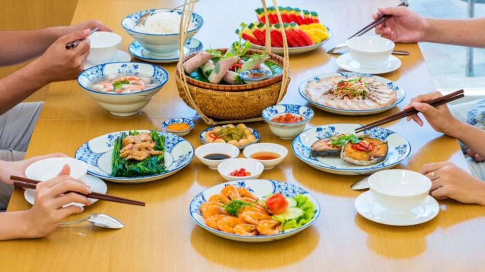

Tóp Món Ngon Đà Nẵng Cùng Địa Chỉ Ăn Trưa Ngon Bổ Rẻ
Khám phá top món ngon Đà Nẵng và top địa chỉ quán ăn ngon Đà Nẵng với nhiều gợi ý ăn uống địa phương hấp dẫn, dễ tìm và đáng thử.
· 6 phút đọc
Chuyên mục
Khám phá những món ăn, quán cà phê và hương vị địa phương trên từng hành trình.

Gợi ý những quán cafe đẹp ở Hội An từ phố cổ, ven biển đến view đồng lúa, phù hợp để chill, ngắm cảnh và chụp ảnh đẹp.
Đọc bài viết6 bài viết
Khám phá top món ngon Đà Nẵng và top địa chỉ quán ăn ngon Đà Nẵng với nhiều gợi ý ăn uống địa phương hấp dẫn, dễ tìm và đáng thử.
· 6 phút đọc
Cùng xem đâu là những quán cafe view đẹp cực chill và đồ uống ngon ở Đà Nẵng bởi thành phố này không chỉ có biển đẹp hay những cây cầu nổi tiếng, mà còn là nơi rất thú vị để khám phá các quán cafe.
· 4 phút đọc
Khám phá ngay ăn gì ở Huế với 20 món đặc sản Huế từ bình dân đến cung đình. Cẩm nang ẩm thực miền Trung chi tiết cho tín đồ sành ăn. Xem ngay!
· 24 phút đọc
Chè việt nam có từ bao giờ? Tại sao người việt lại chuộng uống chè hơn các loại thức uống khác? Chè có tác dụng gì đối với sức khoẻ con người? Hãy cùng Lazi tìm hiểu văn hoá chè việt trong bài viết này nhé
· 9 phút đọc
Khám phá danh sách 28 đặc sản Phú Quốc trứ danh từ Lazi Voyage. Tổng hợp chi tiết món ngon tại chỗ và đặc sản Phú Quốc mua về làm quà chuẩn vị ẩm thực Việ
· 14 phút đọc